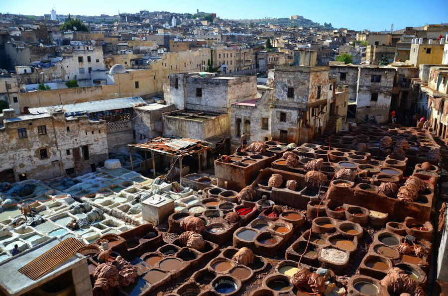
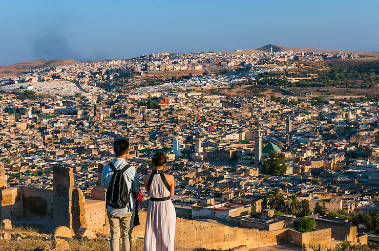
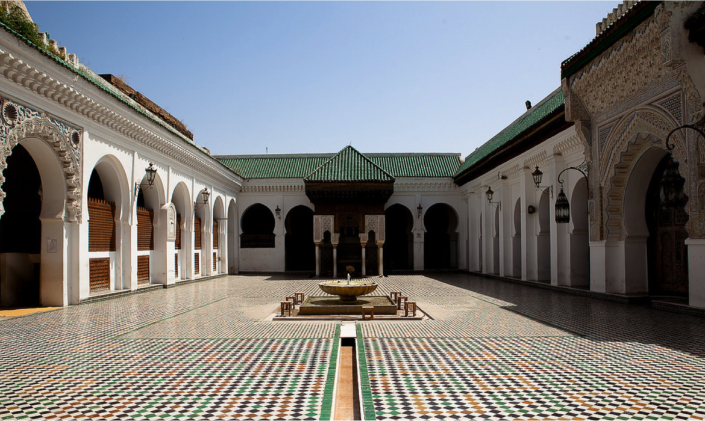
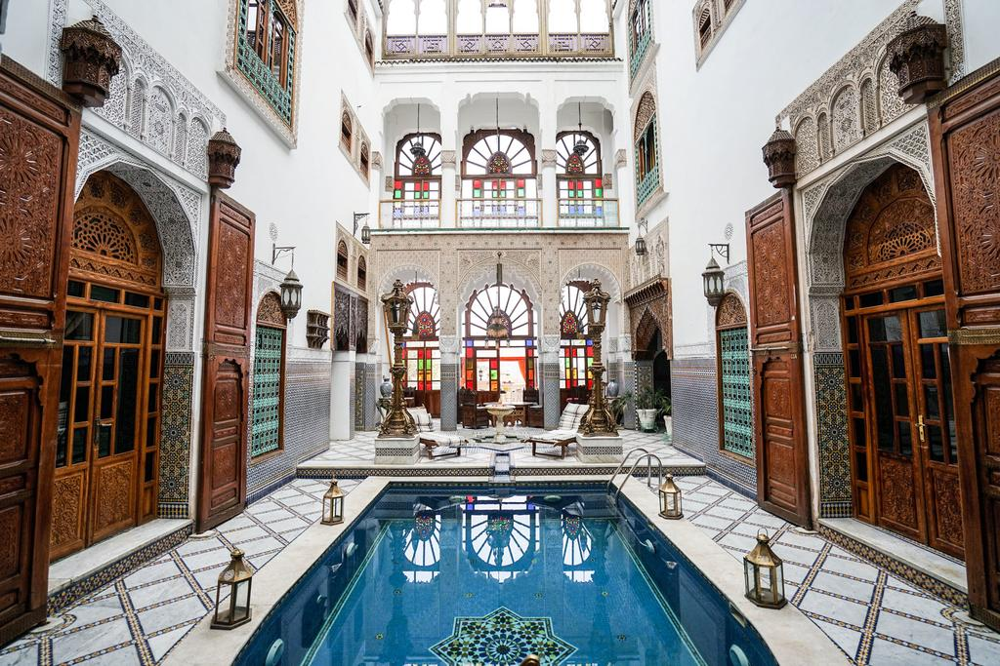

FÈS
|
La ville « Médina Fès » a été fondée7 par le chérif alide Idris Ier en 789 à l'emplacement de l'actuel quartier des Andalous. En 808, le régent Rashid Ben Morshid fonde « al-Aliya » sur l'autre rive de l'oued de Fès. Al Aliya se développe très vite et devient une véritable ville avec mosquée, palais et kissariya (halle, marché).Les sources d'eau vitales aux alentours de Fès, qui avant même sa fondation étaient connues et louées en chanson, ont sans aucun doute été un critère important lors du choix de l'emplacement pour la future métropole.Les évolutions suivantes sont dues à deux vagues successives d'émigration : à partir de 817–818 s'installent dans la ville fondée par Idrîs Ier près de 800 familles andalouses expulsées par les Omeyyades des faubourgs de Cordoue. Peu de temps après, environ 200 familles bannies de Kairouan en Ifriqiya (fuyant les persécutions des Aghlabides) s'installent sur la rive d'al-Aliya. La mosquée universitaire Quaraouiyine fondée par l'aristocrate d'origine kairouanaise Fatima el Fihriya au ixe siècle devient l'un des centres spirituels et culturels les plus importants de l'époque et participe à l'âge d'or intellectuel de la civilisation islamique. Son influence se fait ressentir jusque dans les écoles d'Al-Andalus, et au-delà vers l'Europe d'où elle attire un grand nombre de savants et de mystiques, y compris chrétiens comme Gerbert d'Aurillac futur pape Sylvestre II. Les nouveaux arrivants apportent avec eux aussi bien un savoir-faire technique et artisanal qu'une longue expérience de la vie citadine. Sous leur impulsion, Fès devient un centre culturel important et, après la fondation de la mosquée universitaire Quaraouiyine, le cœur religieux du Maghreb. |
 | |
|  |
Fès se trouve à un emplacement particulièrement avantageux, au croisement de routes commerciales importantes, au cœur d'une région naturellement généreuse avec des matières premières précieuses pour l'artisanat (pierre, bois, argile). Ceci lui permet de développer une riche culture esthétique issue de la grande tradition de l'art arabo-andalou. Fès se trouve sur la route des caravanes allant de la Méditerranée à l'Afrique subsaharienne en passant par la grande cité commerciale de Sijilmassa (disparue au xviie siècle) dans la région de Tafilalet, ce qui augmente également son attrait économique.La médina est un espace dynamique. Ce n’est pas seulement un centre historique réservé aux bazars et aux touristes, c’est aussi un centre économique important. Fès est l’une des villes économiques les plus importantes du Royaume, notamment la seconde ville industrielle et pourtant, une grande partie de ses activités économiques se concentre dans la médina. Celles-ci relèvent essentiellement des industries d’art. On peut citer comme branche principale de cet artisanat, la menuiserie avec sculpture et peinture sur bois, le fer forgé, le cuivre ciselé, l’orfèvrerie, la céramique, le tissage des soieries et la broderie. Tous ces métiers sont exercés dans de minuscules ateliers ou dans des échoppes où les artisans se servent, pour la plupart, d’un matériel désuet. En ce qui concerne la corporation des céramistes, on constate que de nombreux ateliers ne font plus d’efforts quant à la fabrication de leurs émaux et aux soins à prendre durant la cuisson. D’une part, la formule d’atelier-pilote, adoptée en un temps par l’administration, a permis aux artisans de conserver leur savoir-faire et d’améliorer leur production; d’autre part, l’ampleur des commandes royales de ces dernières décennies a entraîné la prospérité de certains secteurs, notamment celui de l’artisanat du décor architectural. On assiste actuellement à un monopole de marchés et de circuits de distribution entre une minorité; de nombreux artisans ont de plus en plus de difficultés à accéder au marché et à avoir les possibilités (matérielles et financement) de mieux produire. |
|
|
La Mosquée Karaouyine est l’emblème de la ville de Fès, une des plus anciennes et des plus illustres du monde musulman fut la première université du Maroc à avoir été fréquentée par des hôtes célèbres tels l’historien Ibn Khaldoun, le poète et écrivain Ibn al Khatib, le médecin philosophe Averroès, Léon l’Africain.Toujours considérée comme l’un des principaux centres spirituels et intellectuels de l’Islam, elle tire son nom du quartier dans lequel elle fut érigée, celui des réfugiés Kairouanais. Elle abrite le siège de l’université musulmane de Fès.Réalisée en plusieurs étapes, la mosquée Karaouiyine fut d’abord fondée en 859 par Fatima El Bint Mohamed Ben Abdellah el-Fihri, une femme pieuse venue de Kairouan. Ce sanctuaire, transformé en mosquée en 933, se composa à l’origine d’une salle de prières, de quatre nefs parallèles au mur de la Qibla et d’une cour large dont le mur nord abrita le Minaret. Elle fut agrandie sous les Zénètes en 956, quelques annexes (bibliothèque, chambres de réclusion (khatoua), salles d’ablutions..) furent annexées à la bâtisse sous le règne des Almohades, Mérinides, Saâdiens et Alaouites. Elle a une capacité de 20000 personnes.Cette belle porte construite au XII ème siècle et restaurée en 1912 est couverte de céramiques bleus et vertes elle porte le nom de la place ou il se trouve , cette place qui a été réaménager s’étend sur un vaste terrain presque plane et irrégulier . bordé de hautes murailles en prisé , percées de plusieurs portes et du prestigieux lycée Moulay IDRISS .Place boujloud revêt une position stratégique , elle représente un lieu de rayonnement culturel et d’animation à caractère populaire. |
 | |
|  |
Le premier mellah de Fès était situé près de l’actuel palais Jamai. Quand les mérinides commencèrent à y construire des medersas, au 13ème siècle, ils relogèrent les juifs dans l’ancienne casbah des archers, près du palais royal, où ils furent cantonnés jusqu’au protectorat. Ce quartier, où s’entassent aujourd’hui des familles modestes (en majorité des paysans fraîchement débarqués des montagnes,) a conservé ses belles maisons à la loggia d’inspiration espagnole ou italienne souvent en piteux état dès que l’on quitte la rue principale. La grande rue des mérinides, où les orfèvres juifs tenaient jadis boutique, en demeure l’artère principale. La façade néoclassique que l’on peut admirer à mi-rue signale l’ancienne maison du grand rabbin de Fès.Palais festival d’audience royale élevé par Moulay Hassan 1er et achevé en 1897 sous Moulay Abdelaziz. Ce bâtiment, réhabilité depuis 1915 en musée d’art et de traditions qui propose les expositions sur les arts fassies,fait partie des demeures du type riyad (maison à jardin) qui a connu une grande floraison à Fés à la fin du XIXème s. et le début du XXème siècle.Ce musée des « arts indigènes », ainsi appelé à l’époque de sa création, abrite d’admirables collections d’art traditionnel de Fès: bois sculptés, dinanderie, zelliges, fers forgés ou plâtres sculptés, les matériaux décoratifs appartiennent au domaine de l’art: broderies, tapis, bijoux et monnaies rivalisent d’intérêt.Mais le clou du musée se trouve dans la salle des poteries. Les plus belles céramiques marocaines sont dues à l’art fassi. Spécialisés dans cette technique depuis le 10 ème siècle, ses artisans ont inventé le célèbre « bleu de Fès » obtenu à partir du cobalt. Sur fond d’émail blanc ou rehaussés de couleurs, les motifs floraux stylisés y dessinent des entrelacs aussi savants qu’harmonieux. |
|